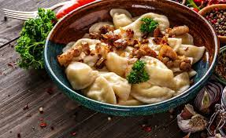

Моя найулюбленіша страва це - вареники
Вареники у діалектах також пироги — українська національна страва у вигляді відвареного прісного тіста і начинки з картоплі, м'яса, грибів, овочів, фруктів, ягід та сиру. Вареники — один із символів української національної кухні.
Сайт де можна купити вареники Це Піца
Це Піца
Піца італійська національна страва, а саме, корж зазвичай круглої форми, який покривається томатною пастою та сиром і запікається.
Сайт піци